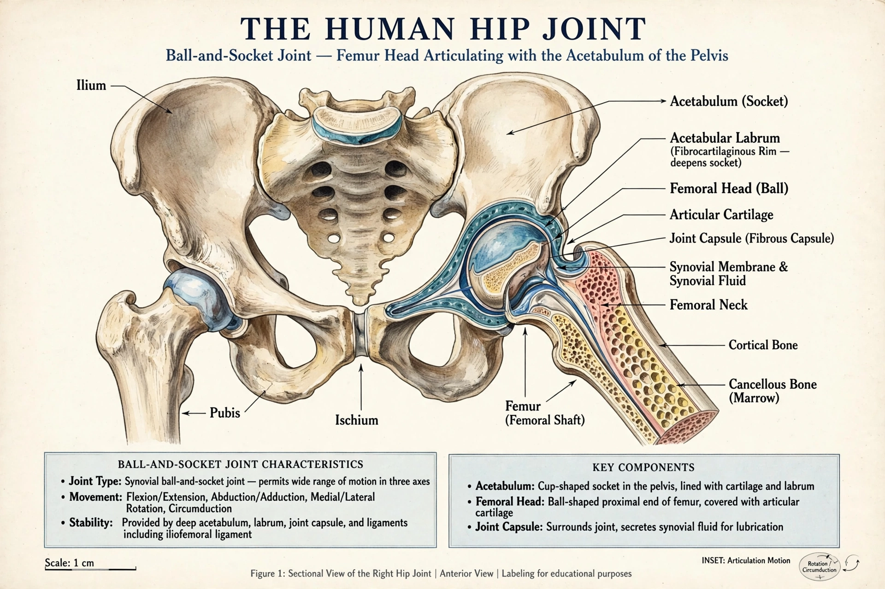

| Hip | |
|---|---|
 | |
| System | Musculoskeletal |
| Joint type | Ball-and-socket synovial joint |
| Bones | Pelvis (acetabulum), femur |
In vertebrate anatomy, the hip (or coxa in medical terminology) is the region and joint between the pelvis and the femur. The hip joint is a ball-and-socket synovial joint formed by the acetabulum of the pelvis and the head of the femur, designed for both stability and a wide range of motion to support body weight in standing and locomotion.
The acetabulum is a deep cup formed by the ilium, ischium, and pubis, deepened by the acetabular labrum. The strong joint capsule and ligaments — iliofemoral (the strongest in the body), pubofemoral, and ischiofemoral — stabilise the joint. Muscles include the gluteals, iliopsoas, hip adductors, and short external rotators. Movements include flexion, extension, abduction, adduction, and rotation.
Hip fracture, especially femoral neck fracture in older adults with osteoporosis, is a major cause of morbidity. Osteoarthritis of the hip commonly leads to total hip replacement, one of the most successful operations in medicine. Developmental dysplasia of the hip affects infants; femoroacetabular impingement and labral tears affect younger active adults.